<title>MIAU.LAB</title>
<meta name="claude:viewport-fit-sides" content="cover">
<link rel="preconnect" href="https://fonts.googleapis.com"><link rel="preconnect" href="https://fonts.gstatic.com" crossorigin>
<link rel="stylesheet" href="https://fonts.googleapis.com/css2?family=Archivo:wdth,wght@62..125,100..900&family=Instrument+Sans:wght@400..700&family=Mea+Culpa&family=Space+Mono:wght@700&display=swap">
<style>
/* layout: uma história de rolagem (título gigante à esquerda, foto do produto à direita, a cor de fundo muda a cada fórmula),
   depois o manifesto com o gato que segue o cursor, a grade de fórmulas, a faixa de padrão e o rodapé com o logo.
   Uma marca, um mundo visual só: cores fixas da identidade (não muda com tema claro/escuro). */
:root {
  --cobalto: #2B3FD1; --rosa: #F4B9CD; --manteiga: #F2DC8B; --creme: #F6EEDC; --nanquim: #1C1A24; --branco: #FFFDF8;
  --display: 'Archivo', 'Arial Narrow', 'Helvetica Neue', sans-serif;
  --texto: 'Instrument Sans', 'Helvetica Neue', Arial, sans-serif;
  --mono: 'Space Mono', ui-monospace, 'SFMono-Regular', Menlo, monospace;
  --acento: 'Mea Culpa', 'Brush Script MT', cursive;
  --topo: 64px;
  color-scheme: light;
}
* { box-sizing: border-box; }
html { scroll-behavior: smooth; }
body { background: var(--creme); color: var(--nanquim); font: 400 17px/1.5 var(--texto); -webkit-font-smoothing: antialiased; overflow-x: hidden; }
body::before { content: ""; position: fixed; inset: 0 0 auto; height: env(safe-area-inset-top, 0px); z-index: 30; background: var(--creme); }
a { color: inherit; }
:focus-visible { outline: 3px solid var(--cobalto); outline-offset: 3px; border-radius: 4px; }
.faixa { padding-left: max(16px, env(safe-area-inset-left, 0px)); padding-right: max(16px, env(safe-area-inset-right, 0px)); }
.mono { font: 700 12.5px/1.45 var(--mono); letter-spacing: .08em; text-transform: uppercase; }
.pilula { display: inline-flex; align-items: center; gap: 8px; border: 2px solid currentColor; border-radius: 999px; padding: 9px 18px 8px; font: 600 13px/1 var(--texto); letter-spacing: .08em; text-transform: uppercase; text-decoration: none; white-space: nowrap; }
.pilula.cheia { background: var(--nanquim); color: var(--creme); border-color: var(--nanquim); }

/* ---------- topo ---------- */
.topo { position: sticky; top: env(safe-area-inset-top, 0px); z-index: 20; height: var(--topo); display: flex; align-items: center; justify-content: space-between; gap: 16px;
  background: var(--fundo-topo, var(--creme)); transition: background .45s ease; }
.marca { font: 900 30px/1 var(--display); font-stretch: 62%; letter-spacing: -.005em; text-decoration: none; }
.marca span { font: 700 15px/1 var(--mono); margin-left: 2px; }
.nav { display: flex; gap: 28px; align-items: center; }
.nav a:not(.pilula) { font: 600 14px/1 var(--texto); text-decoration: none; }
.nav a:not(.pilula):hover { text-decoration: underline; text-underline-offset: 4px; }
@media (max-width: 720px) { .nav a:not(.pilula) { display: none; } }

/* ---------- história de rolagem ---------- */
.historia { position: relative; }
.palco { position: sticky; top: calc(var(--topo) + env(safe-area-inset-top, 0px)); height: calc(100svh - var(--topo) - env(safe-area-inset-top, 0px)); min-height: 560px; overflow: hidden;
  background: var(--fundo, var(--manteiga)); color: var(--tinta, var(--cobalto)); transition: background .55s ease, color .55s ease; }
.palco-in { height: 100%; display: grid; grid-template-columns: minmax(0, 1.05fr) minmax(0, 1fr); gap: clamp(16px, 4vw, 64px); align-items: center; padding-block: clamp(20px, 4vh, 48px); }
.texto-passo { min-width: 0; display: grid; gap: 22px; align-content: center; }
.num { display: flex; align-items: baseline; gap: 14px; }
.num b { font: 900 clamp(40px, 6vw, 84px)/.8 var(--display); font-stretch: 62%; }
.titulo { font: 900 clamp(64px, 11.5vw, 188px)/.84 var(--display); font-stretch: 62%; text-transform: uppercase; letter-spacing: -.01em; margin: 0; text-wrap: balance; }
.titulo .linha { display: block; overflow: hidden; padding-top: .12em; margin-top: -.12em; }
.titulo .linha i { display: block; font-style: normal; transition: transform .6s cubic-bezier(.2,.8,.2,1), opacity .4s; }
.historia[data-trocando] .titulo .linha i { transform: translateY(102%); opacity: 0; }
.desc { max-width: 34ch; font: 500 clamp(17px, 1.5vw, 21px)/1.4 var(--texto); margin: 0; }
.acoes { display: flex; gap: 12px; flex-wrap: wrap; }
.foto-passo { position: relative; height: 100%; min-height: 0; }
.foto-passo figure { position: absolute; inset: 0; margin: 0; border-radius: 18px; overflow: hidden; opacity: 0; transform: translateY(40px) rotate(2deg) scale(.96);
  transition: opacity .55s ease, transform .75s cubic-bezier(.2,.8,.2,1); box-shadow: 0 40px 60px -40px #1c1a2480; }
.foto-passo figure.on { opacity: 1; transform: none; }
.foto-passo img { width: 100%; height: 100%; object-fit: cover; display: block; }
.passos { position: absolute; left: max(16px, env(safe-area-inset-left, 0px)); bottom: 22px; display: flex; gap: 8px; z-index: 2; }
.passos span { width: 30px; height: 4px; border-radius: 4px; background: currentColor; opacity: .25; transition: opacity .3s, width .3s; }
.passos span.on { opacity: 1; width: 54px; }
.gatilhos > div { height: 85svh; }
@media (max-width: 720px) {
  .palco-in { grid-template-columns: 1fr; grid-template-rows: auto minmax(0, 1fr); align-items: start; gap: 18px; }
  .texto-passo { gap: 12px; }
  .titulo { font-size: clamp(56px, 17vw, 96px); }
  .desc { font-size: 16px; }
  .passos { bottom: 14px; }
}

/* ---------- manifesto (o gato que segue o cursor) ---------- */
.manifesto { background: var(--cobalto); color: var(--rosa); padding-block: clamp(64px, 10vw, 140px); }
.manifesto-in { max-width: 1240px; margin: 0 auto; display: grid; gap: clamp(32px, 5vw, 64px); }
.palco-logo { position: relative; width: min(100%, 980px); margin: 0 auto; aspect-ratio: 899 / 640; }
.palco-logo .logo { position: absolute; left: 0; top: 0; width: 899px; height: 700px; transform-origin: 0 0; }
.frase { text-align: center; color: var(--creme); }
.frase .a { font: 500 clamp(38px, 6vw, 84px)/1 var(--texto); letter-spacing: -.045em; }
.frase .b { font: 400 clamp(76px, 12vw, 170px)/.8 var(--acento); color: var(--rosa); margin-top: .12em; }
.colunas { display: grid; grid-template-columns: repeat(3, minmax(0, 1fr)); gap: 24px; color: var(--creme); max-width: 1080px; margin: 0 auto; width: 100%; }
.colunas p { margin: 8px 0 0; font-size: 16px; max-width: 34ch; }
.colunas .mono { color: var(--rosa); }
@media (max-width: 720px) { .colunas { grid-template-columns: 1fr; } }

/* ---------- fórmulas ---------- */
.formulas { padding-block: clamp(64px, 9vw, 120px); }
.formulas-in { max-width: 1240px; margin: 0 auto; display: grid; gap: 32px; }
.cab-formulas { display: flex; justify-content: space-between; align-items: end; gap: 24px; flex-wrap: wrap; }
.cab-formulas h2 { font: 900 clamp(56px, 9vw, 128px)/.84 var(--display); font-stretch: 62%; text-transform: uppercase; color: var(--cobalto); margin: 0; }
.filtros { display: flex; gap: 8px; flex-wrap: wrap; }
.filtros button { font: 600 13px/1 var(--texto); letter-spacing: .08em; text-transform: uppercase; border: 2px solid var(--cobalto); color: var(--cobalto); background: transparent; border-radius: 999px; padding: 10px 18px 9px; cursor: pointer; }
.filtros button[aria-pressed="true"] { background: var(--cobalto); color: var(--creme); }
.grade { display: grid; grid-template-columns: repeat(3, minmax(0, 1fr)); gap: 20px; }
.card { min-width: 0; display: grid; grid-template-rows: auto 1fr; border-radius: 18px; overflow: hidden; background: var(--branco); border: 2px solid #1c1a2412; transition: transform .35s cubic-bezier(.2,.8,.2,1), box-shadow .35s; }
.card:hover { transform: translateY(-6px) rotate(-.6deg); box-shadow: 0 30px 50px -30px #1c1a2466; }
.card .vitrine { position: relative; aspect-ratio: 4 / 3.4; max-width: 100%; }
.card .vitrine img { position: absolute; inset: 26px; width: calc(100% - 52px); height: calc(100% - 52px); object-fit: contain; filter: drop-shadow(0 18px 18px #1c1a2433); transition: transform .45s cubic-bezier(.2,.8,.2,1); }
.card:hover .vitrine img { transform: rotate(-3deg) scale(1.04); }
.card .info { padding: 18px 20px 22px; display: grid; gap: 6px; align-content: start; }
.card h3 { margin: 0; font: 900 34px/.9 var(--display); font-stretch: 62%; text-transform: uppercase; color: var(--cobalto); }
.card p { margin: 0; font-size: 15px; color: #1c1a24cc; }
.card[hidden] { display: none !important; }
@media (max-width: 900px) { .grade { grid-template-columns: repeat(2, minmax(0, 1fr)); } }
@media (max-width: 560px) { .grade { grid-template-columns: 1fr; } }

/* ---------- faixa de padrão ---------- */
.padrao { height: 220px; background: var(--cobalto) url(img/padrao.jpg) 0 0 / 360px 240px repeat; animation: corre 18s linear infinite; position: relative; }
.padrao .pilula { position: absolute; left: 50%; top: 50%; transform: translate(-50%, -50%); background: var(--creme); color: var(--cobalto); border-color: var(--creme); }
@keyframes corre { to { background-position: -360px 0; } }

/* ---------- panorâmica ---------- */
.pano { position: relative; }
.pano img { display: block; width: 100%; height: clamp(320px, 56vw, 760px); object-fit: cover; object-position: 40% 50%; }
.pano figcaption { position: absolute; left: max(16px, env(safe-area-inset-left, 0px)); bottom: 18px; color: var(--nanquim); background: var(--manteiga); padding: 8px 12px; border-radius: 6px; }

/* ---------- rodapé ---------- */
.rodape { background: var(--rosa); color: var(--cobalto); padding-block: clamp(56px, 8vw, 110px) 32px; }
.rodape-in { max-width: 1240px; margin: 0 auto; display: grid; gap: 40px; }
.rodape .palco-logo { width: min(100%, 860px); }
.rodape .linha-base { display: flex; justify-content: space-between; gap: 16px; flex-wrap: wrap; border-top: 2px solid var(--cobalto); padding-top: 18px; }

@media (prefers-reduced-motion: reduce) {
  html { scroll-behavior: auto; }
  *, *::before, *::after { transition: none !important; animation: none !important; }
}
</style>

<header class="topo faixa" id="topo">
  <a class="marca" href="#inicio" aria-label="MIAU.LAB, início">MIAU<span>.lab</span></a>
  <nav class="nav" aria-label="Seções">
    <a href="#formulas">Fórmulas</a><a href="#ciencia">Ciência</a><a href="#sobre">Sobre</a>
    <a class="pilula cheia" href="#formulas">Ver fórmulas</a>
  </nav>
</header>

<main id="inicio">
  <section class="historia" id="historia" aria-label="As fórmulas, uma por vez">
    <div class="palco faixa" id="palco">
      <div class="palco-in">
        <div class="texto-passo">
          <div class="num"><b id="num">Nº01</b><span class="mono" id="tipo">Petisco funcional</span></div>
          <h1 class="titulo" id="titulo"><span class="linha"><i>Pelo que</i></span><span class="linha"><i>brilha.</i></span></h1>
          <p class="desc" id="desc">Ômega 3 e biotina num petisco que o gato pede. Pra um pelo que brilha no sol da janela.</p>
          <div class="acoes"><a class="pilula cheia" href="#formulas">Conhecer a fórmula</a><span class="pilula mono" id="qtd">60 g</span></div>
        </div>
        <div class="foto-passo" id="fotos">
          <figure class="on">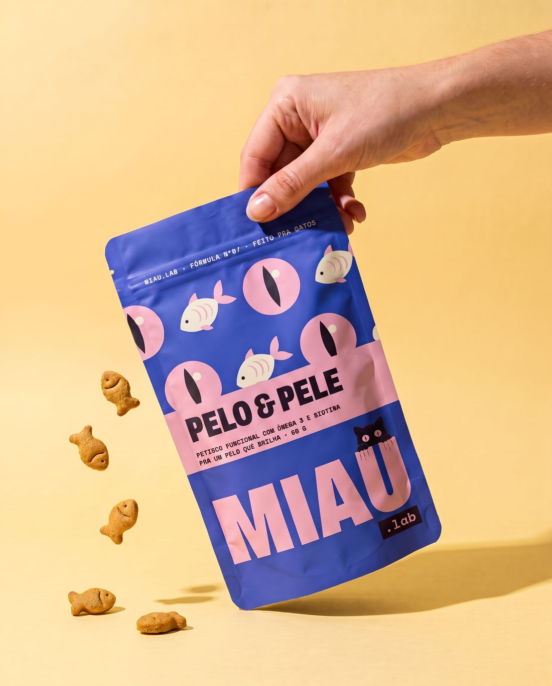</figure>
          <figure>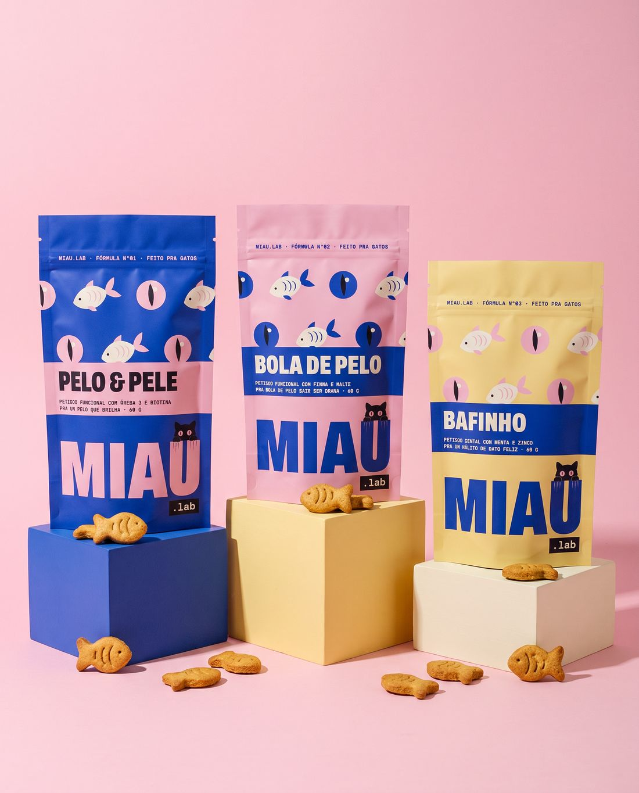</figure>
          <figure>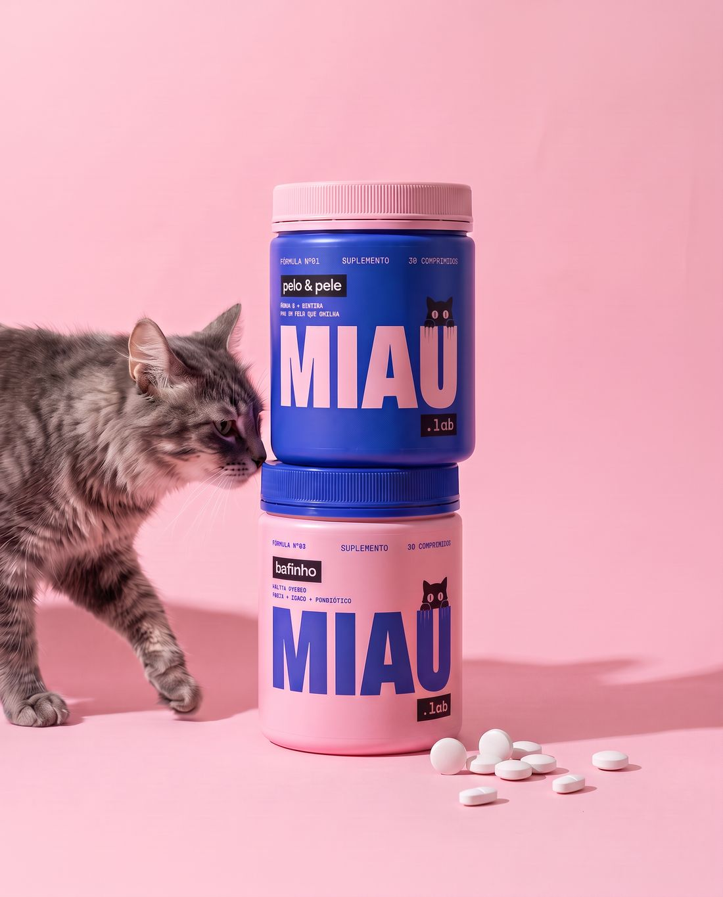</figure>
          <figure>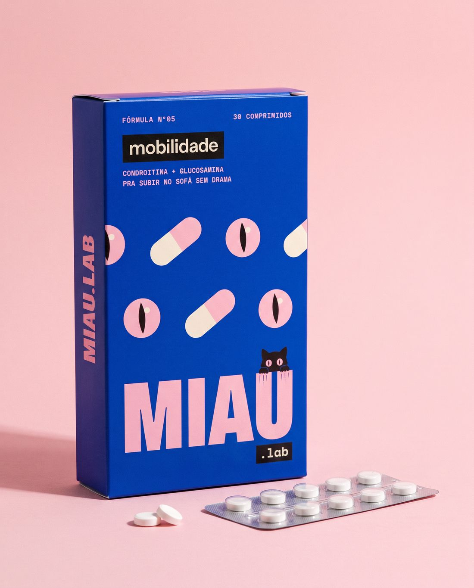</figure>
        </div>
      </div>
      <div class="passos" id="passos" aria-hidden="true"><span class="on"></span><span></span><span></span><span></span></div>
    </div>
    <div class="gatilhos" aria-hidden="true"><div></div><div></div><div></div><div></div></div>
  </section>

  <section class="manifesto faixa" id="ciencia" aria-labelledby="t-ciencia">
    <div class="manifesto-in">
      <div class="palco-logo" id="logo-manifesto" role="img" aria-label="Logo MIAU.lab: um gato preto espiando por cima do U, com as unhas de fora"></div>
      <h2 class="frase" id="t-ciencia"><div class="a">Ciência que</div><div class="b">ronrona.</div></h2>
      <div class="colunas" id="sobre">
        <div><span class="mono">Fórmula veterinária</span><p>Suplementos e petiscos funcionais com rigor de laboratório e a cara da casa de quem tem gato.</p></div>
        <div><span class="mono">Nome de gente</span><p>Cada fórmula leva o nome do que o tutor reconhece: pelo &amp; pele, bola de pelo, bafinho, mobilidade.</p></div>
        <div><span class="mono">Feita pra gatos</span><p>O gato espiando por cima do U resume tudo: curioso, confiante e com as unhas de fora.</p></div>
      </div>
    </div>
  </section>

  <section class="formulas faixa" id="formulas" aria-labelledby="t-formulas">
    <div class="formulas-in">
      <div class="cab-formulas">
        <h2 id="t-formulas">As fórmulas</h2>
        <div class="filtros" role="group" aria-label="Filtrar fórmulas">
          <button type="button" id="f-todos" aria-pressed="true" data-f="todos">Todas</button>
          <button type="button" id="f-petisco" aria-pressed="false" data-f="petisco">Petiscos</button>
          <button type="button" id="f-suplemento" aria-pressed="false" data-f="suplemento">Suplementos</button>
        </div>
      </div>
      <div class="grade" id="grade">
        <article class="card" data-tipo="petisco"><div class="vitrine" style="background:var(--manteiga)">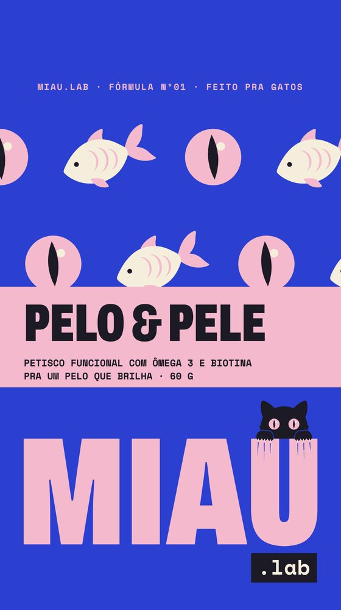</div>
          <div class="info"><span class="mono">Nº01 · petisco funcional</span><h3>Pelo &amp; pele</h3><p>Ômega 3 + biotina, pra um pelo que brilha. 60 g.</p></div></article>
        <article class="card" data-tipo="petisco"><div class="vitrine" style="background:var(--cobalto)">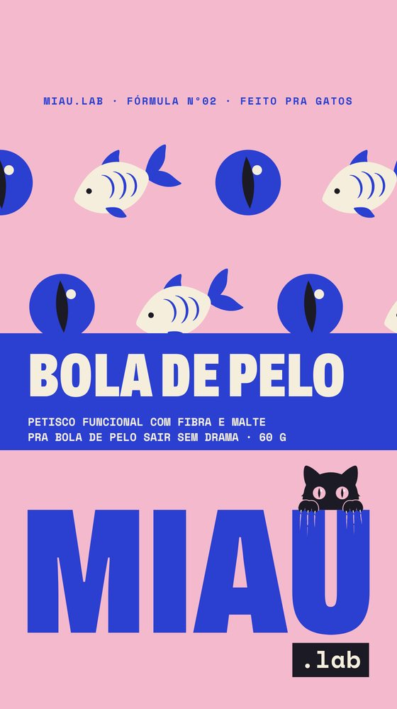</div>
          <div class="info"><span class="mono">Nº02 · petisco funcional</span><h3>Bola de pelo</h3><p>Fibra + malte, pra bola de pelo sair sem drama. 60 g.</p></div></article>
        <article class="card" data-tipo="petisco"><div class="vitrine" style="background:var(--rosa)">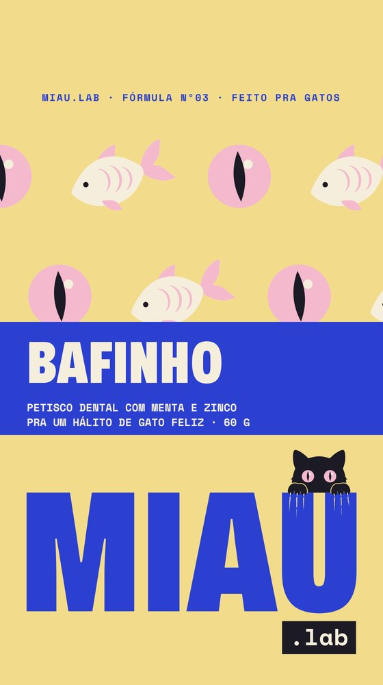</div>
          <div class="info"><span class="mono">Nº03 · petisco dental</span><h3>Bafinho</h3><p>Menta + zinco, pra um hálito de gato feliz. 60 g.</p></div></article>
        <article class="card" data-tipo="suplemento"><div class="vitrine" style="background:var(--creme)">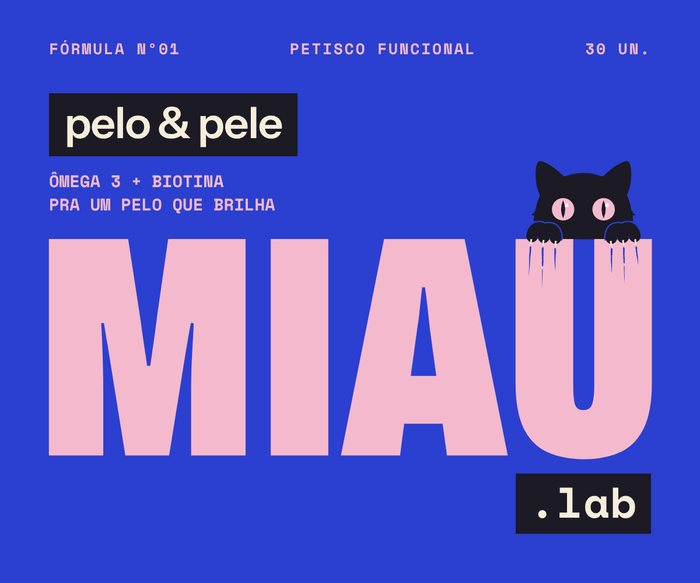</div>
          <div class="info"><span class="mono">Nº01 · suplemento</span><h3>Pelo &amp; pele</h3><p>Ômega 3 + biotina em comprimido. 30 unidades.</p></div></article>
        <article class="card" data-tipo="suplemento"><div class="vitrine" style="background:var(--manteiga)">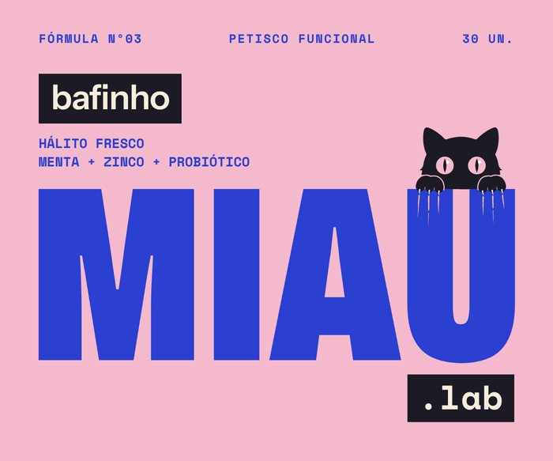</div>
          <div class="info"><span class="mono">Nº03 · suplemento</span><h3>Bafinho</h3><p>Menta + zinco + probiótico. 30 unidades.</p></div></article>
        <article class="card" data-tipo="suplemento"><div class="vitrine" style="background:var(--rosa)">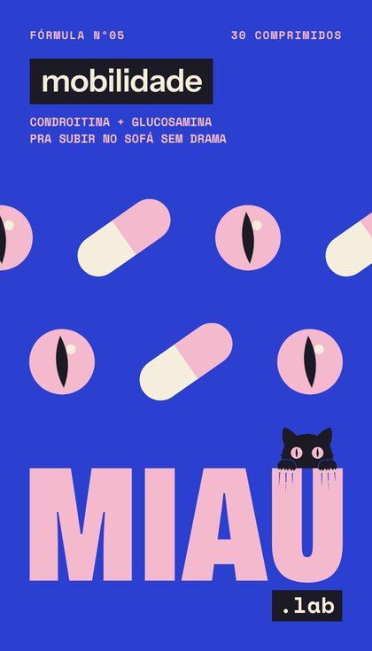</div>
          <div class="info"><span class="mono">Nº05 · suplemento</span><h3>Mobilidade</h3><p>Condroitina + glucosamina, pra subir no sofá sem drama. 30 comprimidos.</p></div></article>
      </div>
    </div>
  </section>

  <div class="padrao" role="img" aria-label="Padrão da marca: olhos de gato e peixinhos"><span class="pilula">olho + peixinho = petisco</span></div>

  <figure class="pano">
    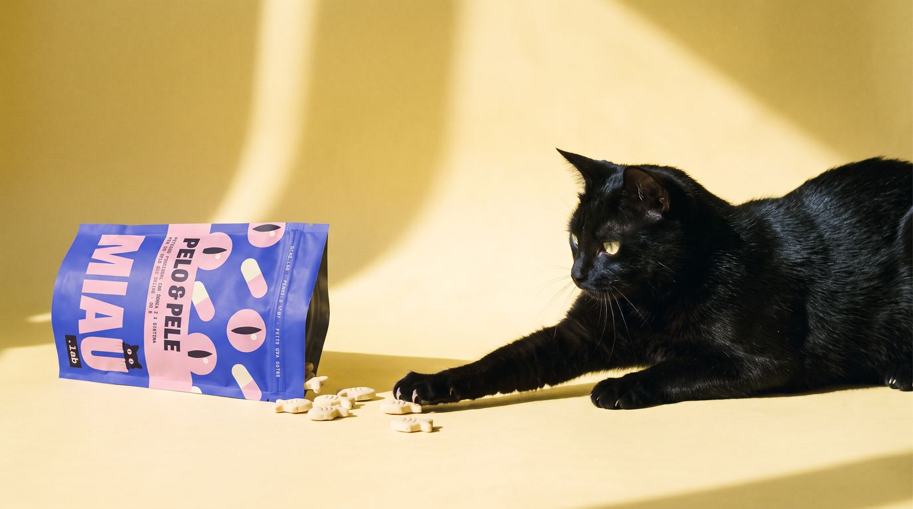
    <figcaption class="mono">Petisco no chão, gato no quadro.</figcaption>
  </figure>
</main>

<footer class="rodape faixa">
  <div class="rodape-in">
    <div class="palco-logo" id="logo-rodape" role="img" aria-label="Logo MIAU.lab"></div>
    <div class="linha-base mono"><span>MIAU.LAB · marca conceitual</span><span>Identidade visual: EMS · @itsemsdesign</span><span>Fórmula veterinária. Feita pra gatos.</span></div>
  </div>
</footer>

<script src="js/gato.js"></script>
<script src="js/logo.js"></script>
<script>
(() => {
  const C = { cobalto: '#2B3FD1', rosa: '#F4B9CD', manteiga: '#F2DC8B', creme: '#F6EEDC', nanquim: '#1C1A24' };
  const reduz = matchMedia('(prefers-reduced-motion: reduce)').matches;

  // ---------- história de rolagem ----------
  const PASSOS = [
    { num: 'Nº01', tipo: 'Petisco funcional', t: ['Pelo que', 'brilha.'], d: 'Ômega 3 e biotina num petisco que o gato pede. Pra um pelo que brilha no sol da janela.', q: '60 g', fundo: C.manteiga, tinta: C.cobalto },
    { num: 'Nº02', tipo: 'Petisco funcional', t: ['Bola de', 'pelo? Sai.'], d: 'Fibra e malte pra bola de pelo sair sem drama, e sem tapete estragado.', q: '60 g', fundo: C.rosa, tinta: C.cobalto },
    { num: 'Nº03', tipo: 'Suplemento', t: ['Bafinho,', 'tchau.'], d: 'Menta, zinco e probiótico pro hálito de gato feliz. Ele cheira e aprova.', q: '30 un.', fundo: C.creme, tinta: C.cobalto },
    { num: 'Nº05', tipo: 'Suplemento', t: ['Sobe no', 'sofá sem drama.'], d: 'Condroitina e glucosamina pras articulações de quem ainda manda na casa.', q: '30 comprimidos', fundo: C.cobalto, tinta: C.creme },
  ];
  const hist = document.getElementById('historia'), palco = document.getElementById('palco'), topo = document.getElementById('topo');
  const fig = [...document.querySelectorAll('#fotos figure')], marcas = [...document.querySelectorAll('#passos span')];
  const el = id => document.getElementById(id);
  let atual = 0, timer;
  function mostra(i) {
    if (i === atual) return; atual = i; const P = PASSOS[i];
    palco.style.setProperty('--fundo', P.fundo); palco.style.setProperty('--tinta', P.tinta);
    fig.forEach((f, k) => f.classList.toggle('on', k === i)); marcas.forEach((m, k) => m.classList.toggle('on', k === i));
    if (reduz) { escreve(P); return; }
    hist.setAttribute('data-trocando', ''); clearTimeout(timer);
    timer = setTimeout(() => { escreve(P); requestAnimationFrame(() => hist.removeAttribute('data-trocando')); }, 260);
  }
  function escreve(P) {
    el('num').textContent = P.num; el('tipo').textContent = P.tipo; el('desc').textContent = P.d; el('qtd').textContent = P.q;
    el('titulo').innerHTML = P.t.map(l => `<span class="linha"><i>${l}</i></span>`).join('');
  }
  function rolagem() {
    const r = hist.getBoundingClientRect(), total = hist.offsetHeight - palco.offsetHeight;
    const u = Math.min(.999, Math.max(0, -r.top / Math.max(1, total)));
    mostra(Math.floor(u * PASSOS.length));
    // o topo acompanha a cor do palco enquanto a história está na tela
    topo.style.setProperty('--fundo-topo', r.top <= 64 && r.bottom > 64 ? PASSOS[atual].fundo : C.creme);
    topo.style.color = r.top <= 64 && r.bottom > 64 ? PASSOS[atual].tinta : C.nanquim;
  }
  addEventListener('scroll', rolagem, { passive: true }); addEventListener('resize', rolagem); rolagem();

  // ---------- logos com o gato (o do manifesto segue o cursor e pisca) ----------
  function poeLogo(caixa, o) {
    const d = document.createElement('div'); d.className = 'logo'; caixa.appendChild(d);
    miauLogoV3(d, Object.assign({ gato: C.nanquim, olho: C.rosa }, o));
    const lab = d.lastElementChild; if (lab) lab.style.fontFamily = "'Space Mono', ui-monospace, monospace";
    const ajusta = () => { const k = caixa.clientWidth / 899; d.style.transform = `translate(0, ${-130 * k}px) scale(${k})`; };
    ajusta(); addEventListener('resize', ajusta);
    d.olhos = [...d.children[0].children[1].children].map(g => ({ g, t0: g.getAttribute('transform'), pup: [...g.children].slice(1) }));
    return d;
  }
  const olhar = (L, dx, dy, pisca = 0) => L.olhos.forEach(({ g, t0, pup }) => {
    g.setAttribute('transform', `${t0} scale(1 ${Math.max(.06, 1 - pisca)})`);
    pup.forEach(e => e.setAttribute('transform', `translate(${dx * 12} ${dy * 7})`)); });
  document.fonts.ready.then(() => {
    const LM = poeLogo(el('logo-manifesto'), { cor: C.rosa, fundo: C.cobalto, labFundo: C.creme, labCor: C.nanquim });
    const LR = poeLogo(el('logo-rodape'), { cor: C.cobalto, fundo: C.rosa, labFundo: C.nanquim, labCor: C.creme });
    let alvo = [0, 0], agora = [0, 0], pisca = 0, prox = performance.now() + 2500;
    addEventListener('pointermove', e => {
      [LM, LR].forEach(L => {}); const r = LM.getBoundingClientRect(), k = r.width / 899;
      const cx = r.left + 798 * k, cy = r.top + 175 * k;   // os olhos do gato ficam por cima do U
      const dx = e.clientX - cx, dy = e.clientY - cy, n = Math.hypot(dx, dy) || 1;
      alvo = [dx / Math.max(n, 220), dy / Math.max(n, 220)];
    }, { passive: true });
    function quadro(t) {
      agora = [agora[0] + (alvo[0] - agora[0]) * .15, agora[1] + (alvo[1] - agora[1]) * .15];
      if (!reduz && t > prox) { const u = (t - prox) / 170; pisca = u < 1 ? Math.sin(Math.PI * u) : 0; if (u >= 1) prox = t + 2600 + Math.random() * 2600; }
      olhar(LM, agora[0], agora[1], pisca); olhar(LR, agora[0], agora[1], pisca);
      requestAnimationFrame(quadro);
    }
    requestAnimationFrame(quadro);
  });

  // ---------- filtros das fórmulas ----------
  const botoes = [...document.querySelectorAll('.filtros button')], cards = [...document.querySelectorAll('.card')];
  botoes.forEach(b => b.addEventListener('click', () => {
    botoes.forEach(x => x.setAttribute('aria-pressed', String(x === b)));
    cards.forEach(c => c.hidden = !(b.dataset.f === 'todos' || c.dataset.tipo === b.dataset.f));
  }));
})();
</script>
